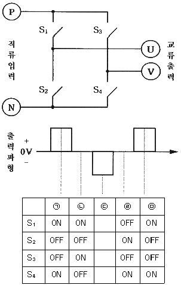
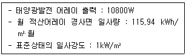
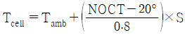
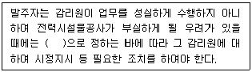
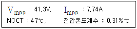
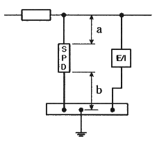
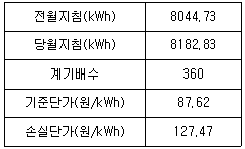

신재생에너지발전설비기사 (2021-09-12 기출문제)
1과목: 태양광발전 기획
1. 신에너지 및 재생에너지 개발·이용·보급 촉진법령에 따른 신·재생에너지 공급인증서의 거래 제한 사유에 해당하지 않는 것은?
- 공급인증서가 발전소별로 5000kW 이내의 수력을 이용하여 에너지를 공급하고 발급된 경우
- 공급인증서가 기존 방조제를 활용하여 건설된 조력(潮力)을 이용하여 에너지를 공급하고 발급된 경우
- 공급인증서가 석탄을 액화·가스화한 에너지 또 중질잔사유를 가스화한 에너지를 이용하여 에너지를 공급하고 발급된 경우
- 공급인증서가 폐기물에너지 중 화석연료에서 부수적으로 발생하는 폐가스로부터 얻어지는 에너지를 이용하여 에너지를 공급하고 발급된 경우
(정답률: 74%)

2. 전기사업법령에 따라 사업계획서 작성 시 전기설비 개요에 포함되어야 할 태양광설비에 대한 사항으로 틀린 것은?
- 태양전지의 종류
- 접속함의 설치장소
- 집광판(集光板)의 면적
- 인버터(Inverter)의 종류
(정답률: 70%)
3. 신에너지 및 재생에너지 개발·이용·보급 촉진법령에 따라 태양에너지(태양의 빛에너지를 변환시켜 전기를 생산하는 방식에 한정한다)의 2015년 이후 의무공급량은 몇 GWh인가?
- 723
- 1353
- 1971
- 2325
(정답률: 67%)
4. 전기사업법령에 따라 전기사업을 하려는 자가 허가 받은 사항을 변경하려고 할 때 “산업통상자원부령으로 정하는 중요 사항”에 해당되지 않는 것은?
- 사업구역 변경
- 공급전압 변경
- 발전설비 설치장소 내에서의 인버터의 설치위치 변경
- 허가를 받은 발전설비용량의 100분의 10을 초과한 설비용량 변경
(정답률: 82%)
5. 설비용량 999.999kW인 태양광발전설비를 염전에 설치하였을 때 적용받을 수 있는 가중치는?
- 1
- 1.019
- 1.049
- 1.229
(정답률: 61%)
6. 태양을 올려다보는 각도가 30°인 경우, air mass(AM) 값은?
- 1.0
- 1.15
- √2
- 2.0
(정답률: 60%)
7. 전기공사업법령에 따라 전기공사업자가 전기공사를 하도급 주기위하여 미리 해당 전기공사의 발주자에게 이를 알리기 위하여 작성하는 하도급 통지서에 첨부하는 서류로 틀린 것은?
- 공사 예정 공정표
- 하도급(재하도급)계약서 사본
- 하수급인 또는 다시 하도급받은 공사업자의 등록수첩 사본
- 하수급인 또는 다시 하도급받은 공사업자의 전기공사자재 보유현황
(정답률: 72%)
8. 국토의 계획 및 이용에 관한 법령에 따라 허가를 받지 않아도 되는 경미한 행위에 해당하지 않는 것은?
- 토지의 일부를 공공용지 또는 공용지로 하기 위한 토지의 분할
- 농림지역 안에서 농림어업용 비닐하우스 안에 육상어류양식장의 설치
- 지구단위계획구역에서 채취면적이 25제곱미터 이하인 토지에서의 부피 50세제곱미터 이하의 토석채취
- 지구단위계획구역에서 물건을 쌓아놓는 면적이 25제곱미터 이하인 토지에 전체무게 50톤 이하, 전체부피 50세제곱미터 이하로 물건을 쌓아놓는 행위
(정답률: 60%)
9. 부지선정 검토 시 법적 인허가 및 신고사항에 포함되지 않는 것은?
- 공작물 축조신고
- 사도개설의 허가
- 무연분묘 개장허가
- 공급인증서 발급허가
(정답률: 71%)
10. 다음 그림은 직류입력으로부터 교류출력을 얻어내는 인버터의 동작원리를 설명하고 있다. 아래와 같은 출력파형을 얻기 위해 ㉢ 신호에 들어갈 스위치의 상태를 S1-S2-S3-S4의 순서에 맞게 나열한 것은?

- OFF-ON-ON-OFF
- ON-ON-OFF-OFF
- OFF-OFF-ON-ON
- ON-OFF-OFF-ON
(정답률: 75%)
11. 다음 조건에서 월간 발전량은 약 몇 kWh/월 인가? (단, 종합설계계수는 0.66을 적용하며 기타 조건을 무시한다.)

- 695.26
- 826.42
- 995.72
- 713.56
(정답률: 56%)
12. 전기사업법령에 따라 대통령령으로 정하는 규모 이하의 발전설비를 갖추고 특정한 공급수역의 수요에 맞추어 전기를 생산하여 전력시장을 통하지 아니하고 그 공급구역의 전기사용자에게 공급하는 것을 주된 목적으로 하는 사업을 말하는 것은?
- 송전사업
- 배전사업
- 중개거래사업
- 구역전기사업
(정답률: 79%)
13. 태양전지의 계산식

에서 NOCT는 무엇인가? (단, Tcell은 태양전지 온도(℃), Tamb 은 주위 온도(℃), S는 방사조도(kW/m2)이다.)- 일조량
- 공기온도
- 개방전압
- 공칭작동 태양전지 온도
(정답률: 72%)
14. 전기공사업법령에 따른 공사업자의 등록취소에 해당하지 않는 경우는?
- 거짓으로 공사업을 등록한 경우
- 타인에게 등록증 또는 등록수첩을 빌려 준 경우
- 전기공사기술자가 아닌 자에게 전기공사의 시공관리를 맡긴 경우
- 공사업의 등록을 한 후 1년 이내에 영업을 시작하지 아니한 경우
(정답률: 60%)
15. 태양광발전을 위한 부지선정 시 일반적인 고려사항이 아닌 것은?
- 계통연계 가능성
- 일조량과 일조시간
- 자연재해의 발생 가능 여부
- 인근 태양광 발전소와의 거리
(정답률: 66%)
16. 태양광발전 어레이에서 생산된 전력 125W가 인버터에 입력되어 인버터 출력이 100W가 되면 인버터의 변환효율은 몇 % 인가?
- 45
- 64
- 80
- 92
(정답률: 74%)
17. 독립형 태양광발전시스템의 설계 시 1일 부하량이 5000Wh이고, 부조일수가 10일, 보수율이 80%, 방전심도가 60%일 때 축전지 용량은 약 몇 Ah 인가? (단, 축전지의 공칭전압은 2 V/cell, 축전지 셀 수는 24개이다.)
- 2170
- 2320
- 2517
- 2730
(정답률: 59%)
18. 할인율을 적용한 수입의 현재가치와 지출의 현재가치를 비교하여 비율로 표시한 것은?
- 내부수익률법(IRR)
- 순현재가치법(NPV)
- 자본회수기간법(PPM)
- 비용/편익비율법(BCR)
(정답률: 47%)
19. 신에너지 및 재생에너지 개발·이용·보급 촉진법령에 따른 재생에너지의 종류로 틀린 것은?
- 수소에너지
- 태양에너지
- 해양에너지
- 지열에너지
(정답률: 79%)
20. 저전압 서지 보호장치-제12부 : 저압 배전 계통 보호용–선정 및 지침(KS C IEC 61643-12 : 2007)에 따른 SPD의 종류로 틀린 것은?
- 조합형 SPD
- 전류 제어형 SPD
- 전압 제한형 SPD
- 전압 스위칭형 SPD
(정답률: 54%)
2과목: 태양광발전 설계
21. 전력시설물 공사감리업무 수행지침에 따른 비상주감리원의 업무에 해당되지 않는 것은?
- 기성 및 준공검사
- 설계도서 등의 검토
- 안전관리계획서 작성
- 설계변경 및 계약금액 조정의 심사
(정답률: 60%)
22. 전력시설물 공사감리업무 수행지침에 따라 감리원은 공사가 시작된 경우에 공사업자로부터 착공신고서를 제출받아 적정성 여부를 검토 후 며칠 이내에 발주자에게 보고하여야 하는가?
- 5일
- 7일
- 14일
- 30일
(정답률: 72%)
23. 건축물 기초구조 설계기준(KDS 41 20 00 : 2019)에 따른 기초형식의 선정에 대한 설명으로 틀린 것은?
- 기초는 하부구조의 규모, 형상, 구조, 강성 등을 함께 고려하여야 한다.
- 기초형식 선정 시 부지 주변에 미치는 영향을 충분히 고려하여야 한다.
- 동일 구조물의 기초에서는 가능한 한 이종형식기초의 병용을 피하여야 한다.
- 구조성능, 시공성, 경제성 등을 검토하여 합리적으로 기초형식을 선정하여야 한다.
(정답률: 49%)
24. 전력기술관리법령에 따른 감리원에 대한 시정조치에 대한 설명이다. 다음 ( )에 들어갈 내용으로 옳은 것은?

- 대통령령
- 국무총리령
- 시·도지사령
- 산업통상자원부령
(정답률: 73%)
25. 지상형 태양광발전시스템 구조물의 종류가 아닌 것은?
- 고정식
- 단축식
- 양축식
- 부유식
(정답률: 79%)
26. 가교 폴리에틸렌 절연 비닐 시스 케이블을 나타내는 약호는?
- DV
- GV
- CV
- OV
(정답률: 73%)
27. 한국전기설비규정에 따라 사용전압이 저압인 전로에 정전이 어려운 경우 등 절연저항 측정이 곤란한 경우 저항성분의 누설전류가 몇 mA 이하이면 그 전로의 절연성능은 적합한 것으로 보는가?
- 1
- 3
- 5
- 10
(정답률: 57%)
28. 태양광발전시스템에 설치하는 CCTV에 대한 설명으로 틀린 것은?
- 감시구역에 설치하는 카메라와 제어실(또는 방재센터)에 설치하는 모니터 및 전원장치 등을 기본구성으로 한다.
- 카메라의 특성에 맞는 휘도를 확보하여야 하며, 화각 내 고휘도 광원, 물채, 햇빛직사 등을 피하야 하며, 파괴하기 어려운 위치에 설치한다.
- 전체 경계구역을 효율적인 화각(촬영 범위) 이내가 되도록 이중거리, 초점거리, 촬영방식, 유효 화소수, 해상도, 최저 피사체조도 등을 고려하여 선정한다.
- 일반적으로 컬러형과 흑백형, 고정형과 회전형(수평, 수직) 옥내형과 옥외형, 노출형과 매입형 등으로 구분하고, 외부로 드러나지 않게 하는 은폐형이 있다.
(정답률: 61%)
29. 한국전기설비규정에 따라 분산형전원을 계통연계하는 경우 전력계통의 단락용량이 다른 자의 차단기의 차단용량 또는 전선의 순시허용전류 등을 상회할 우려가 있을 때에는 그 분산형전원 설치자가 설치하여야 하는 것은?
- 지락차단기
- 영상변류기
- 계기용변압기
- 전류제한리액터
(정답률: 64%)
30. 지반조사(KDS 11 10 10 : 2018)에 따른 예비조사의 목적으로 틀린 것은?
- 구조물 입지로서의 적합성 평가
- 구조물 시공으로 발생될 변화 예측
- 시공방법 계획수립에 필요한 정보를 제공
- 구조물의 거동에 중요한 영향을 미치는 지반의 구성 및 특성 파악
(정답률: 46%)
31. 신재생발전기 계통연계기준에 따라 태양광발전기 계통운영자가 지시하는 기능을 수행하기 위해 구비하여야 하는 무효전력 제어방식에 해당하지 않는 것은?
- 일정 역률 제어
- 일정 입력전류 제어
- 일정 무효전력 출력제어
- 전압 조정을 위한 무효전력 제어
(정답률: 54%)
32. 설계감리업무 수행지침에 따라 설계감리원의 수행 업무범위에 포함되지 않는 것은?
- 설계감리 용역을 발주
- 시공성 및 유지관리의 용이성 검토
- 주요 설계용역 업무에 대한 기술자문
- 설계업무의 공정 및 기성관리의 검토·확인
(정답률: 64%)
33. 전력기술관리법령에 따라 산업통상자원부장관 또는 시·도지사는 검사(질문을 포함한다.)를 하려면 검사일 며칠 전까지 검사 일시, 검사 목적, 검사 내용 등의 검사계획을 검사대상자에게 알려야 하는가? (단, 긴급한 경우나 사전에 알리면 증거인멸 등으로 검사 목적을 달성할 수 없다고 인정되는 경우는 제외한다.)
- 4
- 7
- 15
- 30
(정답률: 63%)
34. 시방서에 대한 설명으로 틀린 것은?
- 공사시방서는 견적내역서를 기본하여 작성한다.
- 발주처가 공사시방서를 작성하는 경우에 활용하기 위한 시공기준은 표준시방서를 따른다.
- 공사시방서는 계약문서의 일부가 되기도 하며, 공사별, 공종별로 정하여 시행하는 시공기준이 된다.
- 특정한 공사의 시공 또는 공사시방서의 작성에 활용하기 위한 종합적인 시공의 기준이 되는 것은 전문시방서이다.
(정답률: 58%)
35. 한국전기설비규정에 따라 사용전압 35kV 이하의 특고압 가공전선이 도로를 횡단하는 경우 지표상 높이는 몇 m 이상이어야 하는가?
- 5
- 5.5
- 6
- 6.5
(정답률: 66%)
36. 외기온도 30℃에서 태양광발전 모듈의 최대 출력전압은 약 몇 V 인가?(문제 오류로 가답안 발표시 1번으로 발표되었지만 확정답안 발표시 모두 정답처리 되었습니다. 여기서는 가답안인 1번을 누르면 정답 처리 됩니다.)

- 36.34
- 39.21
- 41.94
- 43.25
(정답률: 61%)
37. 전기설비기술기준에 따라 사용전압이 400kV 이상의 특고압 가공전선과 건조물 사이의 수평거리는 그 건조물의 화재로 인한 그 전선의 손상 등에 의하여 전기사업에 관련된 전기의 원활한 공급에 지장을 줄 우려가 없도록 몇 m 이상 이격하여야 하는가? (단, 가공전선과 건주물 상부와의 수직거리가 28m 미만인 경우이다.)
- 0.5
- 1
- 3
- 5
(정답률: 52%)
38. 전력시설물 공사감리업무 수행지침에 따라 감리원 해당 공사와 관련하여 공사업자의 공법 변경요구 등 중요한 기술적인 사항에 대하여 요구한 날부터 며칠 이내에 이를 검토하고 의견서를 첨부하여 발주자에게 보고하여야 하는가?
- 4
- 7
- 14
- 30
(정답률: 70%)
39. 분산형전원 배전계통연계 기술기준에 따라 분산형전원 연계 시스템은 안정상태의 한전계통 전압 및 주파수가 정상 범위로 복원된 후 그 범위 내에서 몇 분간 유지되지 않는 한 분산형전원의 재병입이 발생하지 않도록 하는 지연기능을 갖추어야 하는가?
- 1분
- 5분
- 10분
- 30분
(정답률: 53%)
40. 변환효율 13%의 100W 태양광발전 모듈을 이용하여 10kW 태양광발전 어레이를 구성하는데 필요한 설치면적(m2)으로 적당한 것은? (단, STC 조건이다.)
- 75
- 77
- 79
- 81
(정답률: 62%)
3과목: 태양광발전 시공
41. 공칭단면적이 38mm2 인 경동연선을 경간이 300m이고, 고저차가 없는 두 철탑 사이에 가선하는 경우 이도는 몇 m 인가? (단, 전선의 중량이 0.348kg/m, 전선의 수평장력이 650kg 이다.)
- 4.02
- 5.02
- 6.02
- 7.02
(정답률: 57%)
42. 증폭기의 입력전압이 5mv, 출력전압이 5V 일 때 전압이득(dB)은?
- 3
- 60
- 100
- 1000
(정답률: 52%)
43. 어떤 부하에 전압을 10% 낮추면 전력은 몇 % 감소하는가?
- 10
- 15
- 19
- 27
(정답률: 53%)
44. 어떤 변전소의 부하가 10MVA, 역률이 0.75 일 때 역률을 0.9로 개선하려면, 필요한 전력용 커패시터의 용량은 약 몇 kVA 인가?
- 1500
- 2000
- 2500
- 3000
(정답률: 34%)
45. 지상 무효분 공급으로 페란티 현상 방지를 위해 설치하는 리액터는?
- 직렬리액터
- 소호리액터
- 병렬리액터
- 한류리액터
(정답률: 40%)
46. 접지저항을 감소시키는 접지저항저감제가 갖추어야 할 조건이 아닌 것은?
- 사람과 가축에 안전할 것
- 전기적으로 양호한 부도체일 것
- 접지전극을 부식시키지 않을 것
- 계절에 따른 접지저항값의 변동이 적을 것
(정답률: 73%)
47. 한국전기설비규정에 따라 태양광발전설비에서 사용하는 전선의 시설방법이 아닌 것은?
- 접속점에 장력이 가해지도록 할 것
- 충전부분이 노출되지 아니하도록 시설할 것
- 모듈의 출력배선은 극성별로 확인할 수 있도록 표시할 것
- 모듈 및 기타 기구에 전선을 접속하는 경우는 나사로 조이고, 기타 이와 동등 이상의 효력이 있는 방법으로 기계적·전기적으로 안전하게 접속할 것
(정답률: 76%)
48. 테브난의 정리와 등가변환 관계에 있는 것은?
- 밀만의 정리
- 중첩의 정리
- 노튼의 정리
- 보상의 정리
(정답률: 66%)
49. 한국전기설비규정에 따라 금속덕트에 전선을 시설 시, 전광표시장치 기타 이와 유사한 장치 또는 제어회로 등의 배선만을 넣는 경우 전선단면적(절연피복의 단면적을 포함한다.)의 합계는 덕트의 내부 단면적의 몇 % 이하이어야 하는가?
- 20
- 30
- 40
- 50
(정답률: 39%)
50. 한국전기설비규정에 따라 합성수지관 상호 간 및 박스와는 관을 삽입하는 깊이를 관의 바깥지름의 몇 배 이상으로 하여야 하는가? (단, 접착제를 사용하지 않은 경우이다.)
- 0.8
- 1.2
- 1.5
- 2.0
(정답률: 59%)
51. 태양광발전설비의 시공 전 진행하는 시방서의 검토 내용이 아닌 것은?
- 재해 예방을 위한 검사
- 제반 법규 및 규정의 적합성
- 설계도면, 구조계산서, 공사내역서 일치 여부
- 주요 자재 설비와 제품 등의 제품사양서 일치 여부
(정답률: 60%)
52. 금속으로부터 전자를 진공으로 이탈시키는데 필요한 최소에너지는?
- 일함수
- 기저준위
- 페르미준위
- 에너지준위
(정답률: 50%)
53. 가공 송전선에 댐퍼를 설치하는 이유는?
- 코로나 방지
- 전자유도 감소
- 전선 진동방지
- 현수애자 경사방지
(정답률: 72%)
54. 그림과 같은 SPD의 접속도체의 총 길이(a+b)는 몇 m 이하로 하여야 하는가?

- 0.5
- 1
- 1.5
- 2
(정답률: 54%)
55. 보호계전장치의 구비조건에 해당하지 않는 것은?
- 신뢰성
- 협조성
- 불연성
- 후비성
(정답률: 55%)
56. 태양광발전 어레이의 구조물 설치 시 지반상태에 따른 해결책이 아닌 것은?
- 연약층이 깊을 경우 독립기초로 한다.
- 지반의 허용지지력이 부족할 경우 저판 폭을 증가시키거나 지반을 치환한다.
- 배면토의 강도정수가 부족할 경우 저판 폭을 증가시키거나 사면경사도를 완화한다.
- 지반의 지하수위가 높을 경우 지지력 저하로 침하가 발생할 수 있으므로 배수공을 설치한다.
(정답률: 63%)
57. 태양광발전설비의 사용전검사 신청서 제출 시 첨부하는 서류가 아닌 것은?(문제 오류로 가답안 발표시 2번으로 발표되었지만 확정답안 발표시 모두 정답처리 되었습니다. 여기서는 가답안인 2번을 누르면 정답 처리 됩니다.)
- 설계도서
- 접지설계계산서
- 감리원 배치확인서
- 전기안전관리자 선임신고증명서
(정답률: 74%)
58. 터파기(KCS 11 20 15 : 2018)에 따른 현장 품질관리에 대한 설명으로 틀린 것은?
- 파낸 바닥면과 기초에 접하거나 아래에 있는 흙은 동해를 입지 않도록 보호해야 한다.
- 자반변위나 이완된 흙이 터파기 바닥면으로 떨어지는 것을 방지하고 시공 중 지반 안정을 유지해야 한다.
- 터파기공사 중 토질에 변화가 생길 때에는 즉시 공사감독자에게 보고하여 승인을 받은 후 시공하여야 한다.
- 예상하지 못한 지중조건이 발견되면 공사감독자에게 통지하고 작업 중지 지시가 있을 때까지는 해당구역의 작업을 계속 진행해야 한다.
(정답률: 74%)
59. 신전원설비공사(KCS 31 60 30 : 2019)에 따른 태양광발전 어레이 및 접속함의 시설방법으로 틀린 것은?
- 태양광발전 모듈은 교체가 용이 한 구조이어야 한다.
- 태양광발전 어레이 및 접속함은 장기간 사용에 충분한 난연성이 있어야 한다.
- 태양광발전 모듈은 스테인리스 부속자재(볼트·너트·와셔 등)로 견고하게 조립하고 시공하여야 한다.
- 태양광발전 어레이 및 접속함은 자중·적설·풍압·지진·진동·충격 등에 대하여 안전한 구조이어야 한다.
(정답률: 58%)
60. 수변전설비공사(KCS 31 60 10 : 2019)에 따른 수변전기기 시공에 대한 설명으로 틀린 것은?
- 전기실 바닥 트렌치·트레이 및 풀박스는 전압 및 회선별로 정리하여 배선하고, 회선별 표찰을 부착하여야 한다.
- 모선 및 기기 접속도체의 접속은 전기적·기계적으로 완전하게 시공하여야 하며, 접속점은 최대한으로 하여야 한다.
- 전기실에 설치하는 수변전설비는 특성·품질·시공방법 등을 검토하여야 하며, 감리자의 승인을 얻은 후 설치 및 시공하여야 한다.
- 변압기 등과 같이 진동이 있는 기기와 모선을 접촉할 경우는 기기의 진동이 모선에 전달되지 않도록 가요성 도체 등을 설치하여야 한다.
(정답률: 70%)
4과목: 태양광발전 운영
61. 태양광발전시스템의 계측에 사용되는 기기 중 검출된 데이터를 컴퓨터 및 먼 거리에 설치된 표시장치에 전송하는 경우에 사용되는 장치는?
- 검출기
- 연산장치
- 기억장치
- 신호변환기
(정답률: 64%)
62. 소형 태양광 발전용 인버터(계통연계형, 독립형)(KS C 8564 : 2020)에 따라 3상 독립형 인버터의 경우 부하 불평형 시험 시 정격용량에 해당하는 부하를 연결한 후 U상, V상, W상 중 한 상의 부하를 0으로 조정한 후 몇 분 동안 운전하는가?
- 10
- 15
- 20
- 30
(정답률: 46%)
63. 지붕공사 안전보건작업 기술지침에 따라 지붕경사가 20° 이상인 경우 지붕작업발판의 설치 기준으로 옳은 것은?
- 작업발판 길이는 1m 이상이어야 한다.
- 작업발판 폭은 100mm 이상이어야 한다.
- 미끄러지는 것과 옆으로 움직이는 것을 방지하는 구조이어야 한다.
- 작업자 및 자재 등을 제외한 하중에 충분히 견딜 수 있는 구조이어야 한다.
(정답률: 68%)
64. 태양광발전용 변압기의 정기점검 내용으로 틀린 것은?
- 유면계, 온도계의 파손 여부
- 부싱 등의 균열, 파손, 변형 여부
- 퓨즈통, 애자 등에 균열 변형 여부
- 건식형인 경우 코일, 절연물의 과열에 의한 손상 여부
(정답률: 54%)
65. 태양광발전시스템 점검 시 비치해야 하는 전기안전관리 장비가 아닌 것은?
- 측량계
- 멀티미터
- 클램프 미터
- 적외선 온도측정기
(정답률: 68%)
66. 태양광발전시스템 점검 계획 시 고려하는 사항으로 옳은 것은?
- 신설설비는 고장발생 확률이 높기 때문에 점검 주기를 단축하였다.
- 중요한 설비와 비교적 중요하지 않은 설비를 구별하여 반영하였다.
- 고장이력을 검토하여 고장이 빈번한 기기는 점검 계획에서 제외하였다.
- 기기부하 상태를 확인하여 저부하 상태의 설비는 점검 주기를 단축하였다.
(정답률: 62%)
67. 산업안전보건기준에 관한 규칙에 따라 사업주가 근로자에게 미칠 위험성을 미리 제거하기 위하여 안전진단 등 안전성 평가를 진행하여야 하는 경우에 해당하지 않는 것은?
- 화재 등으로 구축물 또는 이와 유사한 시설물의 내력(耐力)이 개선되었을 경우
- 구축물 또는 이와 유사한 시설물에 지진, 동해(凍害), 부동침하(不同沈下) 등으로 균열·비틀림 등이 발생하였을 경우
- 구축물 또는 이와 유사한 시설물의 인근에서 굴착·항타작업 등으로 침하·균열 등이 발생하여 붕괴의 위험이 예상될 경우
- 구조물, 건축물, 그 밖의 시설물이 그 자체의 무게·적설·풍압 또는 그 밖에 부가되는 하중 등으로 붕괴 등의 위험이 있을 경우
(정답률: 75%)
68. 태양광발전시스템의 점검 중 일상점검에 관한 내용으로 틀린 것은?
- 이상 상태를 발견한 경우에는 배전반 등의 문을 열고 이상 정도를 확인한다.
- 원칙적으로 정전을 시켜놓고 무전압 상태에서 기기의 이상 상태를 점검하고 필요에 따라서는 기기를 분리하여 점검한다.
- 주로 점검자의 감각(오감)을 통해서 실시하는 것으로 이상한 소리, 냄새, 손상 등을 점검 항목에 따라서 행하여야 한다.
- 이상 상태가 직접 운전을 하지 못할 정도로 전개된 경우를 제외하고는 이상 상태의 내용을 정기점검 시에 참고자료로 활용한다.
(정답률: 63%)
69. 인버터의 이상신호 조치 방법 중 태양전지의 전압이 과전압인 경우 조치사항은?
- 연결단자 점검
- 인버터 및 팬 점검 후 운전
- 태양전지 전압 점검 후 정상 시 5분 후 재가동
- 시스템 정지 후 고장 부분 수리 또는 계통점검 후 운전
(정답률: 59%)
70. 태양광발전(PV) 모듈(안전)(KS C 8563 : 2015)에서 플라스틱 등 특정한 용도로 적용할 때 그 사용 용도의 적합성 여부를 미리 예측할 수 있도록 플라스틱 가연성을 시험하는 장치는?
- IP 시험기
- 난연성 시험기
- 트래킹 시험기
- Hot wire coil ignition 시험기
(정답률: 65%)
71. 절연보호구의 선정 및 사용에 관한 기술지침에 따라 사용전압이 300V를 초과하고 교류 600V 또는 직류 750V 이하의 작업에 사용하는 절연 고무장갑의 종별로 옳은 것은?
- A종
- B종
- C종
- D종
(정답률: 53%)
72. 전기안전관리자의 직무에 관한 고시에 따라 전기설비의 주요 구성품이 동작시험 및 계기측정 등을 통해 전기설비기술기준에 적합한지 여부를 매년 정기적으로 정밀하게 점검하는 것은?
- 일상점검
- 사용전 점검
- 공사 중 점검
- 정밀(연차)점검
(정답률: 80%)
73. 태양광발전시스템에서 유지보수 전의 안전조치로 틀린 것은?
- 검전기로 무전압 상태를 확인한다.
- 잔류전하를 방전시키고 접지시킨다.
- 차단기 앞에 '점검중' 표지판을 설치한다.
- 해당 단로기를 닫고 주회로가 무전압이 되게 한다.
(정답률: 64%)
74. 태양광발전 접속함(KS C 8567 : 2019)에 따라 서지 보호장치(SPD)에 대한 설명으로 틀린 것은?
- 공칭 방전 전류(In, 8/20)는 모든 경우에 대해 10kA 이상이어야 한다.
- 서지 보호장치 최대 연속 사용전압은 접속함 회로 정격전압의 1.2배 이상이어야 한다.
- 소형 접속함(스트링 2회로 이상)의 경우, 입력 회로의 근접하여 서지 보호장치를 설치하여야 한다.
- 중대형 접속함(스트링 4회로 이상)의 경우, 출력 회로에 근접하여 서지 보호장치를 설치하여야 한다.
(정답률: 41%)
75. 전기안전관리법령에 따라 전기안전관리자를 선임하지 않아도 되는 발전설비의 용량으로 옳은 것은?
- 20 kW 이하
- 30 kW 이하
- 50 kW 이하
- 100 kW 이하
(정답률: 62%)
76. 태양광발전시스템에서 발생하는 고장 종류와 원인의 연결로 틀린 것은?
- 환기팬 소음 - 환기팬 노화
- 케이블 변색 – 불량품 적외선 과다노출
- 모듈 백화, 적화 현상 – 제조 공정상 불량
- 모듈 단자함 불량 – 방수 불량, 전선 납땜 불량
(정답률: 51%)
77. 표의 내용을 기준하여, 한국전력공사의 SMP 구입전력금액의 공급가액은 약 얼마인가? (단, 소내소비전력 차감 및 무부하 손실량은 없으며, 발전소의 REC가중치는 1.08 이다.)

- 716979원
- 774337원
- 4356115원
- 47046⑤원
(정답률: 46%)
78. 굴착공사 계측관리 기술지침에 따른 일반적인 계측기 선정 원리로 틀린 것은?
- 구조가 간단하고 설치가 용이할 것
- 계기의 오차가 적고 이상 유무의 발견이 쉬울 것
- 온도와 습도의 영향을 적게 받거나 보정이 간단할 것
- 예상 변위나 응력의 크기보다 계측기의 측정 범위가 좁을 것
(정답률: 72%)
79. 전기설비 검사 및 점검의 방법·절차 등에 관한 고시에 따라 태양광발전설비에서 전력변환장치의 정기검사 시 세부검사내용으로 틀린 것은?
- 개방전압
- 외관검사
- 절연저항
- 접지저항
(정답률: 31%)
80. 태양광발전 시스템 직류용 커넥터-안전 요구사항 및 시험(KS C IEC 62852 : 2014)에 따라 잠금 장치 또는 스냅인 장치가 있는 커넥터는 최소 몇 N의 부하를 견뎌야 하는가?
- 10
- 30
- 50
- 80
(정답률: 32%)